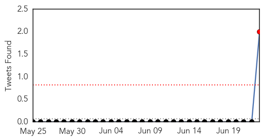
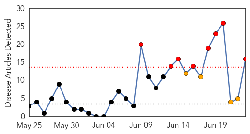
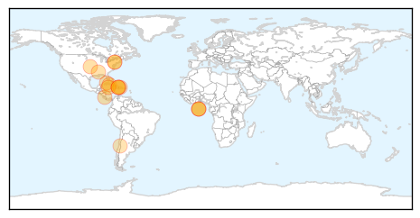

Ebola
30-Day Web Trend
14 alerts, 4 warnings

30-Day Twitter Trend
1 alerts, 0 warnings

Article Locations

Article Confidences

Top Articles:
- 1.000
- Sierra Leone Steps Up Measures to Tackle Ebola Outbreak — Naharnet
- 1.000
- Ebola In West Africa Is 'Totally Out Of Control,'
- 1.000
- Physicians Say Massive Deployment Needed to Fight Ebola Virus Disease Epidemic in West Africa
- 1.000
- Observer and Eccentric Newspapers and Hometown Weeklies
- 1.000
- Ebola epidemic unprecedented in West Africa, medical aid group says
- 0.999
- West African Ebola epidemic "out of control"
- 0.999
- West African Ebola epidemic "out of control"
- 0.999
- West African Ebola epidemic 'out of control'
- 0.999
- Ebola virus outbreak is 'out of control' in West Africa
- 0.999
- Ebola virus in West Africa claiming hundreds of lives: Many fear it is now out of control
- 0.999
- What a relief!
- 0.999
- Ebola Is 'Out of Control,' Doctors Without Borders Says
- 0.999
- West African Ebola epidemic 'out of control': aid group
- 0.999
- UPDATE 2-West African Ebola epidemic out of control - aid group
- 0.999
- Current Ebola Outbreak Is Now The Worst In History And 'Totally Out Of Control'
- 0.998
- Ebola is "out of control" in West Africa, aid group says
- 0.998
- West African ebola epidemic 'out of control,' doctors warn in plea
- 0.997
- West Africa Ebola epidemic is 'out of control'
- 0.996
- West African Ebola epidemic out of control: aid group
- 0.995
- Doctors Without Borders: Ebola 'epidemic is out of control'
- 0.995
- الاخبار المصورة
- 0.982
- UPDATE 2-West African Ebola epidemic out of control - aid group
Top Tweets:
- 0.676
- RT: Ebola Outbreak is 'OUT OF CONTROL' (and continues to spread in a city w/ an int'l airport). Read my latest for more: http:…
- 0.534
- RT: MSF warns that it has reached the limit of what it can do to fight the deadly outbreak of Ebola in West Africa http://t.co/CI…
Chikungunya
30-Day Web Trend
8 alerts, 4 warnings

30-Day Twitter Trend
0 alerts, 0 warnings

Article Locations
Article Confidences

Top Articles:
- 0.999
- Mosquito-Borne Chikungunya Virus May Be Headed for U.S. – WebMD
- 0.999
- Now, chikungunya virus heads for US
- 0.999
- Cayman under chikungunya alert
- 0.999
- CDC in V.I. to help respond to chikungunya
- 0.999
- What Is Chikungunya?
- 0.999
- Mosquito-borne Virus and Health Concerns
- 0.997
- Public Health Authorities Began Preparing for Chikungunya Years Ago – Entomology Today
- 0.995
- Cuba: 6 cases of chikungunya virus in travelers
- 0.995
- Central America on alert for new epidemic
- 0.994
- Caribbean chikungunya outbreak slows; total nears 190,000
- 0.980
- Mississippi confirms first case of chikungunya virus
- 0.968
- Miss. has 1st case of mosquito-borne virus
- 0.963
- First Case of Mosquito-Borne Virus in Mississippi
- 0.894
- Chikungunya still high
- 0.822
- Health officials caution to prevent mosquito breeding and bites
- 0.746
- Tourism : Tourism Promotion and travel warnings...
Top Tweets:
-
No tweets found for Jun 23, 2014